One place for an amateur football team that knows who is coming, what the score is and who scored, with as little admin as possible for the people who run the team.
Eén plek voor een amateurvoetbalteam die weet wie er komt, wat de stand is en wie er scoorde, met zo min mogelijk beheer voor de mensen die het team draaiende houden.
RoleRol
Product owner and project managerProduct owner en projectmanager
YearJaar
2026
Team
SCG'18 Zaterdag 4, NetherlandsSCG'18 Zaterdag 4, Nederland
The demo uses fictional data. Nothing you do there is saved.
De demo gebruikt verzonnen data. Niets wat je daar doet wordt opgeslagen.
01The problemHet probleem
A team of about twenty people, one match day a week, one training a week, and all of the coordination lived in a chat.
Een team van ongeveer twintig mensen, één wedstrijddag per week, één training per week, en alle afstemming liep via een chat.
Who is coming, who is late, who forgot the shirts, what was the score, who scored. Chats lose information. Nobody can answer "how often did I actually train" or "who scored the most".
Wie komt er, wie is te laat, wie is de shirts vergeten, wat was de uitslag, wie scoorde. Chats verliezen informatie. Niemand kan antwoord geven op "hoe vaak heb ik eigenlijk getraind" of "wie scoorde het meest".
Clubbie replaces the WhatsApp group and the captain's head. Players sign in, see the agenda, the live match, the standings and their own stats. Trainers manage attendance, line-ups and the match day. The real app is for team members only, because it needs an account. To let anyone see it, there is a public demo with made-up data at clubbie.net/demo. The first team on the platform is my own, and the product is built so more teams can follow.
Clubbie vervangt de WhatsApp-groep en het hoofd van de aanvoerder. Spelers loggen in en zien de agenda, de live wedstrijd, de stand en hun eigen statistieken. Trainers beheren aanwezigheid, opstellingen en de wedstrijddag. De echte app is alleen voor teamleden, want je hebt een account nodig. Om het voor iedereen te laten zien is er een openbare demo met verzonnen data op clubbie.net/demo. Het eerste team op het platform is mijn eigen team, en het product is zo gebouwd dat er meer teams kunnen volgen.
02What I builtWat ik heb gebouwd
A tour in six chapters. All screenshots come from the demo mode, with made-up names and scores.
Een rondleiding in zes hoofdstukken. Alle screenshots komen uit de demomodus, met verzonnen namen en uitslagen.
Try the demoProbeer de demo
It opens straight into the app as a trainer, with a switcher for trainer, player and guest. The data is fictional, and nothing can break or be saved for real.
Hij opent direct in de app als trainer, met een wisselaar voor trainer, speler en gast. De data is verzonnen en er kan niets echt kapotgaan of worden opgeslagen.
The agenda shows trainings, matches and team outings, with filters and a list and calendar view. Matches arrive automatically from the official club schedule feed (iCal). Trainings and outings are added by hand.
De agenda toont trainingen, wedstrijden en teamuitjes, met filters en een lijst- en kalenderweergave. Wedstrijden komen automatisch binnen via de officiële clubplanning (iCal). Trainingen en uitjes worden met de hand toegevoegd.
Attendance is entered by the trainer per day on a "Start check" screen, so players do not have to answer anything. Injured players are credited as present. An outing is a plain check-in list that can be copied to WhatsApp. Self-service RSVP is built, and paused behind a feature flag until the team is ready for it.
De aanwezigheid wordt per dag door de trainer ingevoerd op een "Start check"-scherm, dus spelers hoeven niets te beantwoorden. Geblesseerde spelers tellen als aanwezig. Een uitje is een gewone incheck-lijst die naar WhatsApp gekopieerd kan worden. Zelf aan- en afmelden (RSVP) is gebouwd en staat gepauzeerd achter een feature flag, tot het team eraan toe is.
images/clubbie/agenda.jpg
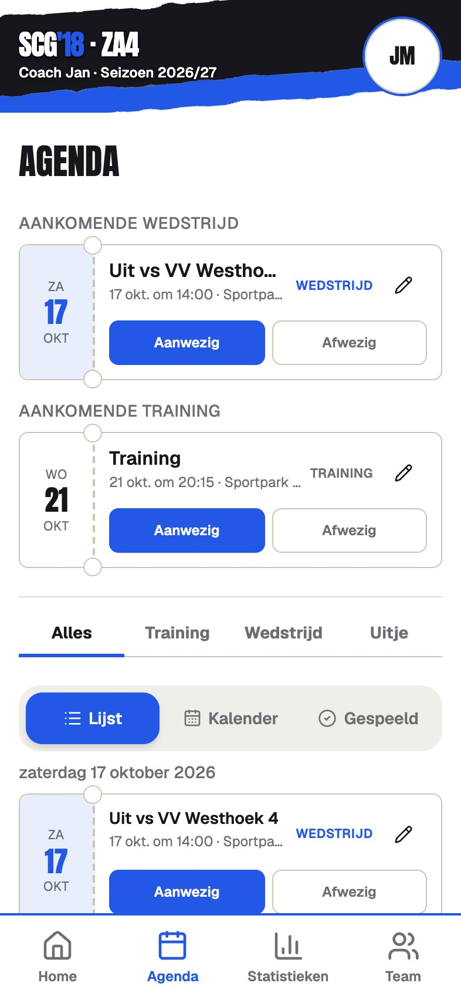
The agenda in list view.De agenda in lijstweergave.
B
Match dayWedstrijddag
The trainer runs the match live: a timer, goals with scorer and assist, opponent goals, cards, substitutions with the minute, half-time and full-time. Everyone sees the live score. People who are not logged in can follow along on a public page.
De trainer bestuurt de wedstrijd live: een timer, doelpunten met schutter en assist, tegendoelpunten, kaarten, wissels met de minuut, rust en eindsignaal. Iedereen ziet de live stand. Wie niet is ingelogd, kan meekijken op een openbare pagina.
When a goal goes in, a shareable goal card pops up with confetti on every phone that has the app open. Web push notifications cover goals and the final whistle, also for people who are not logged in. A line-up builder with formations lets the trainer set the team, and position swaps are updated after the match.
Bij een doelpunt verschijnt er op elke telefoon waar de app open staat een deelbare doelpuntkaart met confetti. Webpushmeldingen voor doelpunten en het eindsignaal werken ook voor mensen die niet zijn ingelogd. Met een opstellingsbouwer met formaties zet de trainer het team neer, en positiewissels worden na de wedstrijd bijgewerkt.
images/clubbie/home-public.jpg
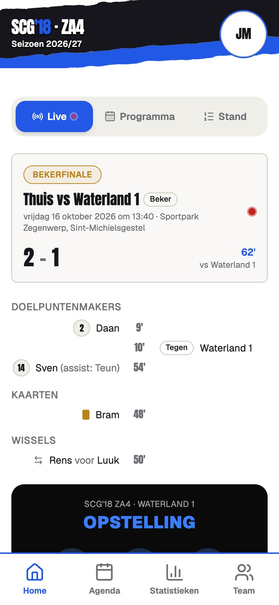
The public homepage with the live or latest match.De openbare homepage met de live of laatste wedstrijd.
images/clubbie/match-live.jpg
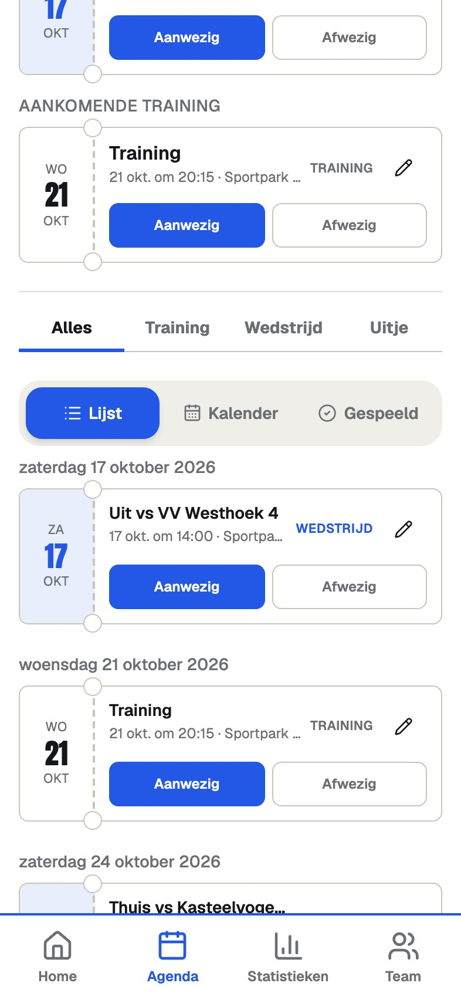
Live match control for the trainer.Live wedstrijdbediening voor de trainer.
images/clubbie/goal-card.jpg
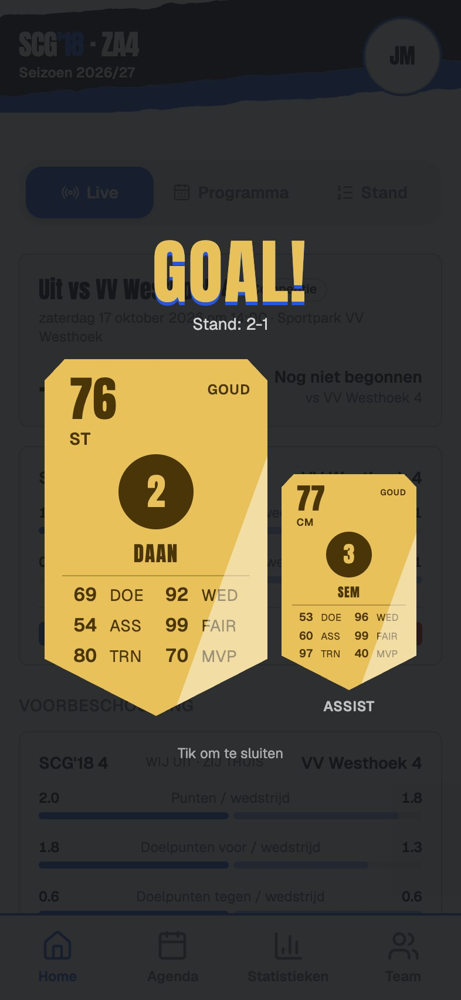
The goal card, shareable.De doelpuntkaart, deelbaar.
images/clubbie/lineup.jpg
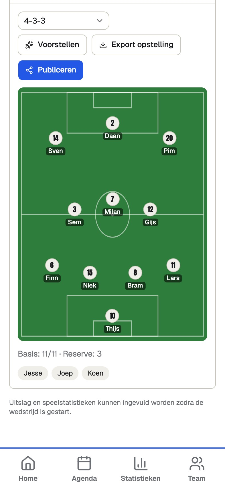
The line-up builder.De opstellingsbouwer.
C
CompetitionCompetitie
The league table and the programme of the whole poule, plus an opponent preview with form, head-to-head and a forecast.
De ranglijst en het programma van de hele poule, plus een voorbeschouwing op de tegenstander met vorm, onderlinge resultaten en een verwachting.
The club sites block bots, so poule results are imported through a personal bookmarklet that reads the page in the phone's own browser, with a paste fallback. Importing results rebuilds the league table and fills in our own match scores.
De clubsites blokkeren bots, dus poule-uitslagen worden geïmporteerd met een persoonlijke bookmarklet die de pagina leest in de eigen browser van de telefoon, met een plakoptie als terugval. Het importeren van uitslagen bouwt de ranglijst opnieuw op en vult onze eigen wedstrijduitslagen in.
images/clubbie/standings.jpg
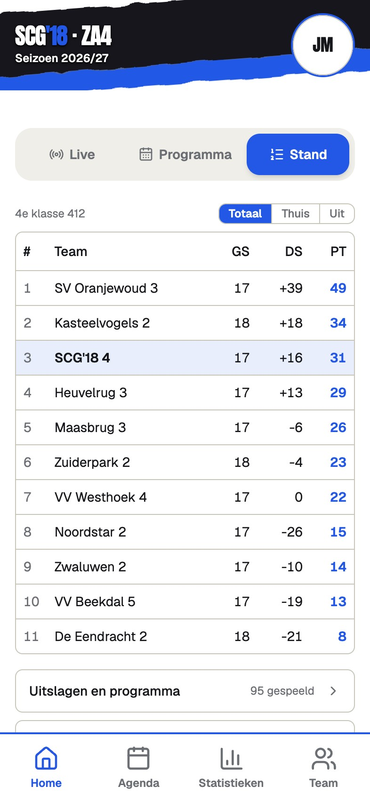
The league table.De ranglijst.
D
Player cards and ratingsSpelerskaarten en ratings
FIFA-style player cards with a rating per player. The model is documented inside the app, in a screen I called the rating bot. Attendance counts for 60 percent (trainings and matches, injured counts as present). What you do on the pitch counts for 40 percent, per position, so a goalkeeper is scored differently from a striker. The result is shrunk towards a neutral value when there are few matches, so one lucky game cannot give a 99. Competition matches only.
FIFA-achtige spelerskaarten met een rating per speler. Het model wordt in de app zelf uitgelegd, op een scherm dat ik de rating bot heb genoemd. Aanwezigheid telt voor 60 procent mee (trainingen en wedstrijden, geblesseerd telt als aanwezig). Wat je op het veld doet telt voor 40 procent, per positie, dus een keeper wordt anders beoordeeld dan een spits. Het resultaat wordt bij weinig wedstrijden richting een neutrale waarde getrokken, zodat één gelukkige wedstrijd geen 99 kan opleveren. Alleen competitiewedstrijden.
Around the cards: Man of the Match per game, a Team of the Month in 4-3-3 where players can only fill positions they actually played, a prompt generator for a monthly poster that the owner uploads, and public player profiles.
Rondom de kaarten: Man of the Match per wedstrijd, een Team van de Maand in 4-3-3 waarin spelers alleen posities kunnen invullen die ze echt hebben gespeeld, een promptgenerator voor een maandelijkse poster die de eigenaar uploadt, en openbare spelersprofielen.
images/clubbie/cards-grid.jpg
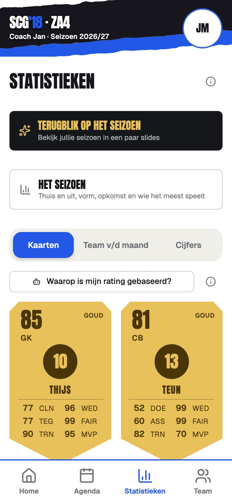
The squad as player cards.De selectie als spelerskaarten.
images/clubbie/card-detail.jpg
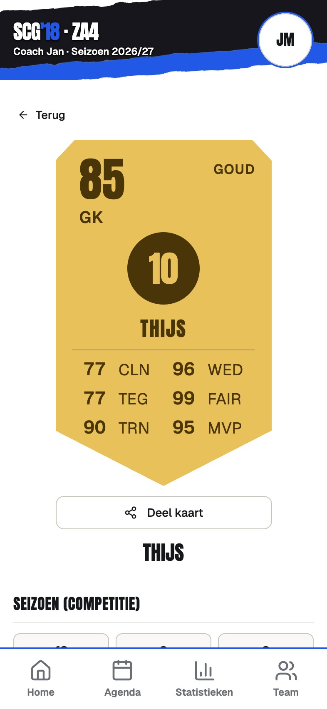
One card, with the share button.Eén kaart, met de deelknop.
images/clubbie/team-of-month.jpg
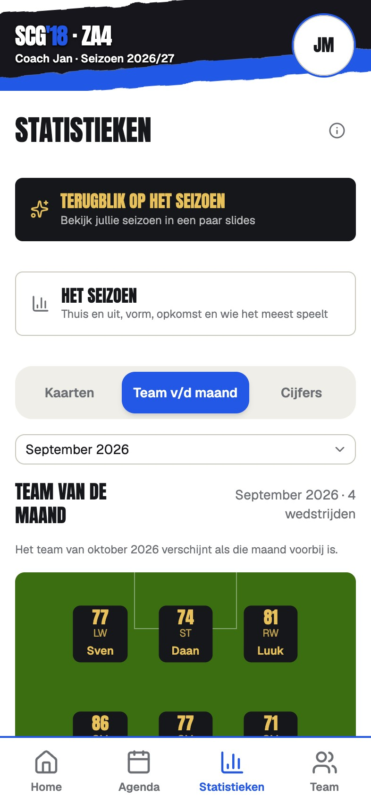
Team of the Month.Team van de Maand.
images/clubbie/rating-explainer.jpg
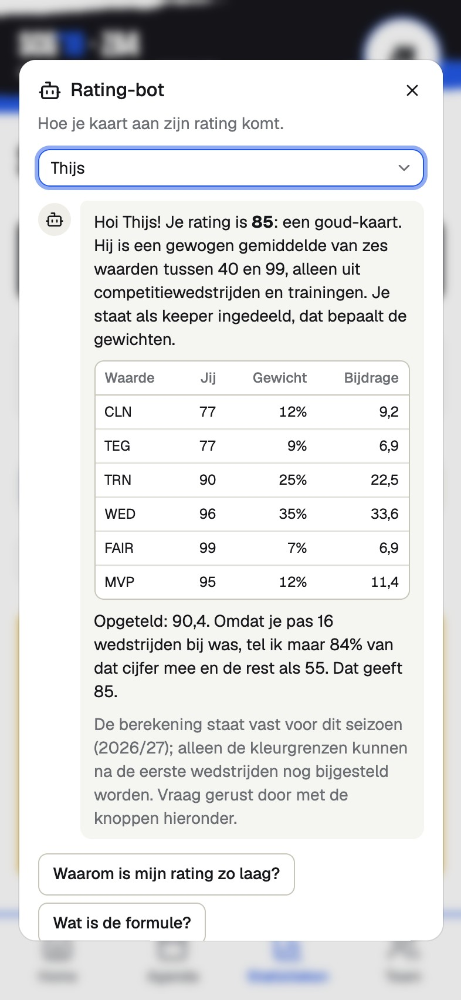
The rating model, explained in the app.Het ratingmodel, uitgelegd in de app.
E
StatisticsStatistieken
Team and player statistics, and a "Het seizoen" page with results, home against away, form, training attendance, who plays the most, goals per half and cards.
Team- en spelersstatistieken, en een "Het seizoen"-pagina met uitslagen, thuis tegen uit, vorm, trainingsaanwezigheid, wie de meeste minuten speelt, doelpunten per helft en kaarten.
images/clubbie/season.jpg
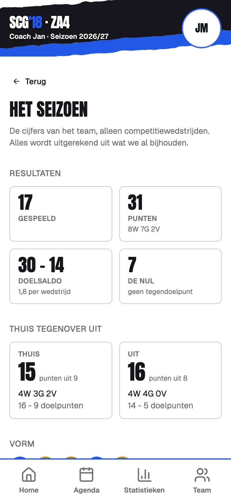
The "Het seizoen" page.De pagina "Het seizoen".
images/clubbie/desktop-stats.jpg
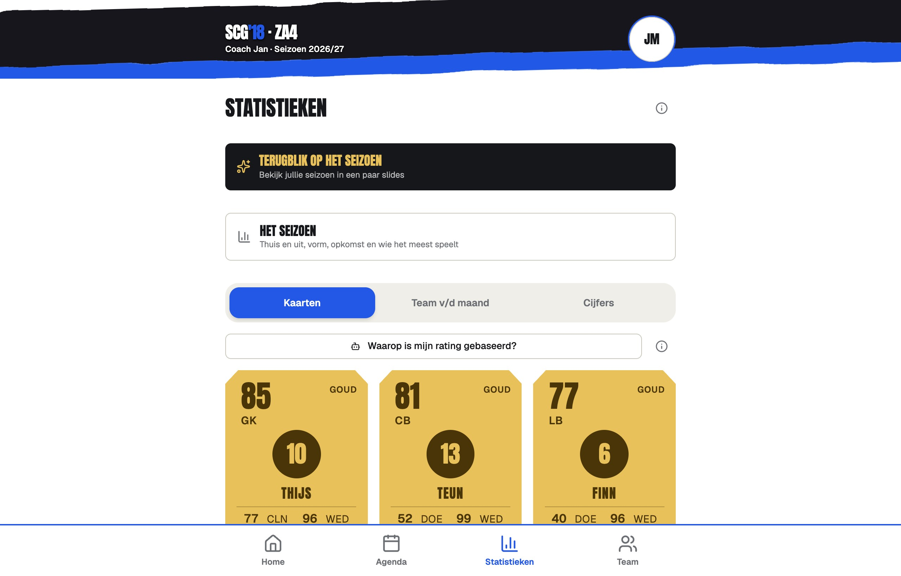
The statistics page on a laptop.De statistiekenpagina op een laptop.
F
Season recap, "Terugblik"Seizoensterugblik, "Terugblik"
A Spotify-Wrapped-style recap of the season, as full-screen story slides with one statistic each: goal balance, top scorers, assists, minutes, strongest cards, Man of the Match, most loyal trainers, team attendance, clean sheets, biggest win, win streak, comebacks, supersub, cards, home against away, most matches, guest players and funny moments the trainers noted down. Then a browsable squad slide with every player's shareable card, and a closing "Bedankt mannen" slide.
Een terugblik op het seizoen in de stijl van Spotify Wrapped, als schermvullende verhaalslides met elk één statistiek: doelsaldo, topscorers, assists, minuten, sterkste kaarten, Man of the Match, trouwste trainers, teamaanwezigheid, clean sheets, grootste zege, winstreeks, comebacks, supersub, kaarten, thuis tegen uit, meeste wedstrijden, gastspelers en grappige momenten die de trainers hebben genoteerd. Daarna een bladerbare selectieslide met de deelbare kaart van elke speler, en een afsluitende "Bedankt mannen"-slide.
Each slide can have a generated background picture. I wrote the image prompts, and the pictures are uploaded in the app. Music starts after a "Start met muziek" tap, from an uploaded track or a YouTube link. Slides push over each other with a swipe that follows the finger, an automatic timer with a visible progress bar and a pause, staged entrances and count-up numbers. A public share link, a frozen snapshot, lets people outside the team watch it, with a proper link preview in WhatsApp.
Elke slide kan een gegenereerde achtergrondafbeelding hebben. Ik schreef de afbeeldingsprompts, en de plaatjes worden in de app geüpload. De muziek start na een tik op "Start met muziek", van een geüploade track of een YouTube-link. Slides schuiven over elkaar met een swipe die de vinger volgt, een automatische timer met zichtbare voortgangsbalk en een pauzeknop, gefaseerde entrees en optellende getallen. Met een openbare deellink, een bevroren momentopname, kunnen mensen buiten het team meekijken, met een nette linkvoorbeeld in WhatsApp.
images/clubbie/recap-intro.jpg
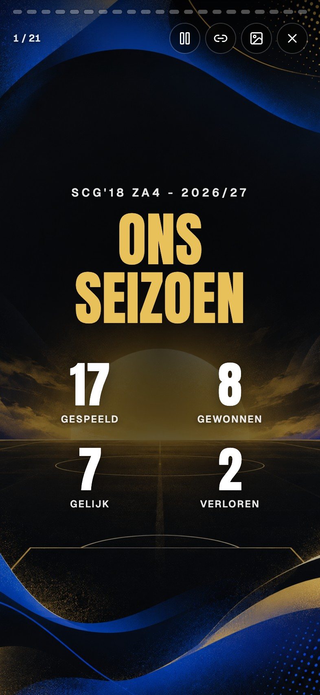
The recap opens.De terugblik opent.
images/clubbie/recap-homeaway.jpg
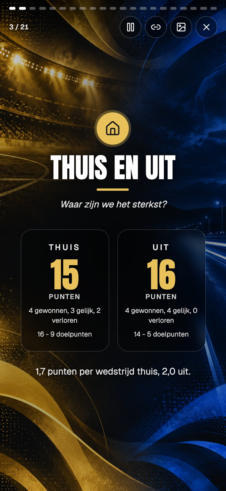
Home against away.Thuis tegen uit.
images/clubbie/recap-topscorers.jpg
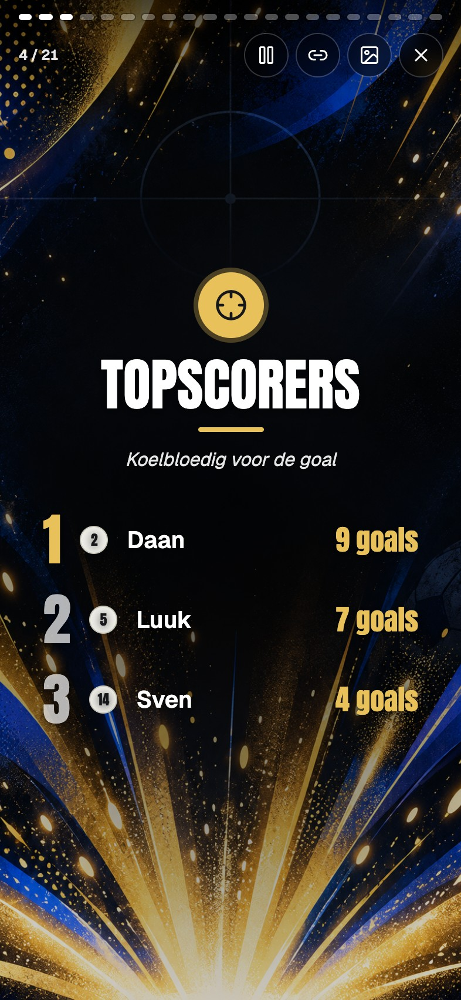
One statistic per slide.Eén statistiek per slide.
images/clubbie/recap-moments.jpg
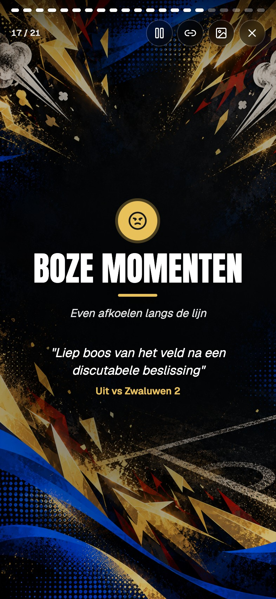
Funny moments, noted by the trainers.Grappige momenten, genoteerd door de trainers.
images/clubbie/recap-squad.jpg
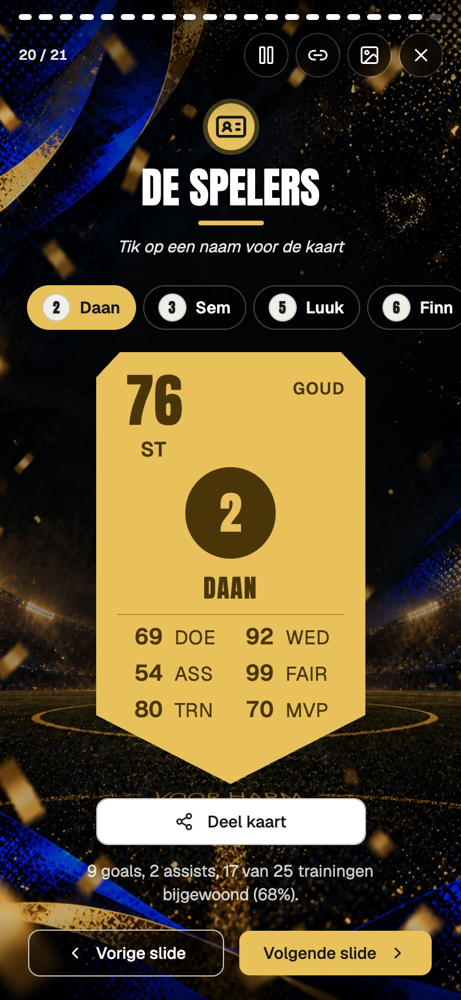
The squad slide.De selectieslide.
images/clubbie/recap-closing.jpg
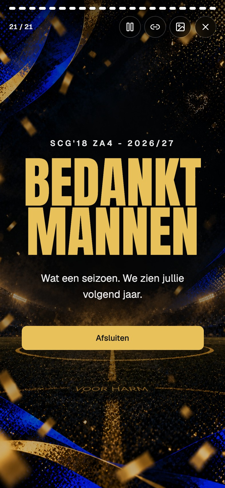
The closing slide.De afsluitende slide.
Built for weak signalGebouwd voor zwak signaal
At the pitch the signal is poor. The app shell is cached by a service worker and the last known data stays on the phone. Goals and cards entered offline wait in a queue and are sent in order when the connection returns. Each entry carries its own id, so a re-send never counts a goal twice.
Bij het veld is het signaal slecht. De appshell wordt gecachet door een service worker en de laatst bekende gegevens blijven op de telefoon. Doelpunten en kaarten die offline worden ingevoerd, wachten in een wachtrij en worden op volgorde verstuurd zodra de verbinding terugkomt. Elke invoer heeft een eigen id, dus opnieuw versturen telt nooit een doelpunt dubbel.
Privacy by designPrivacy door ontwerp
Phone numbers live in a separate table that only staff can read. Roles (player, trainer, admin, owner) are enforced in the database with row-level security, not only in the interface. Fines, a boetepot, are built and tested but paused behind a feature flag.
Telefoonnummers staan in een aparte tabel die alleen staf kan lezen. Rollen (speler, trainer, admin, eigenaar) worden in de database afgedwongen met row-level security, niet alleen in de interface. Boetes, een boetepot, zijn gebouwd en getest, maar staan gepauzeerd achter een feature flag.
03Under the hoodOnder de motorkap
Front end. Vite, React, TypeScript, React Router, Tailwind CSS v4, shadcn/ui and TanStack Query, with a persisted cache and a version buster.
Front-end. Vite, React, TypeScript, React Router, Tailwind CSS v4, shadcn/ui en TanStack Query, met een persistente cache en een versie-buster.
Back end. Supabase only: Postgres, Auth, row-level security, SECURITY DEFINER functions for every multi-step write, Storage for pictures and audio, Edge Functions for the schedule sync, the league-table scrape and push notifications, and scheduled jobs with pg_cron.
Back-end. Alleen Supabase: Postgres, Auth, row-level security, SECURITY DEFINER-functies voor elke schrijfactie in meerdere stappen, Storage voor afbeeldingen en audio, Edge Functions voor de plannings-sync, het scrapen van de ranglijst en pushmeldingen, en geplande taken met pg_cron.
Hosting. Vercel, plus one small serverless function that adds link-preview tags to shared recap links.
Hosting. Vercel, plus één kleine serverless functie die linkvoorbeeld-tags toevoegt aan gedeelde terugblik-links.
Migrations. More than 90 numbered SQL migrations, each commented with the reason for the change.
Migraties. Meer dan 90 genummerde SQL-migraties, elk met commentaar waarom de wijziging nodig was.
Demo mode. An in-memory fake backend, so the whole UI can be explored and tested without touching real data. In the public demo the app's database client even points at an address that does not exist, so nothing can reach the real project. Every screenshot on this page comes from it.
Demomodus. Een nep-backend in het geheugen, zodat de hele interface kan worden verkend en getest zonder echte data aan te raken. In de openbare demo wijst de databaseclient van de app zelfs naar een adres dat niet bestaat, zodat niets het echte project kan bereiken. Elke screenshot op deze pagina komt hieruit.
Details worth a sentence.
Details die een zin waard zijn.
The recap's slide transitions and swipe are hand-built, with no animation library.
The player cards scale with container queries.
Cards are rendered to images for sharing.
The offline queue is idempotent.
De slide-overgangen en swipe van de terugblik zijn met de hand gebouwd, zonder animatiebibliotheek.
De spelerskaarten schalen mee met container queries.
Kaarten worden naar afbeeldingen gerenderd om te delen.
De offline wachtrij is idempotent.
04How I built itHoe ik het bouwde
The code was written together with an AI coding assistant (Claude Code) over many sessions. My part was the product thinking, the priorities, the domain knowledge, the testing and the decisions.
De code is samen met een AI-codeerassistent (Claude Code) geschreven, over veel sessies. Mijn aandeel was het productdenken, de prioriteiten, de domeinkennis, het testen en de beslissingen.
I acted as product owner. I described the problem in plain language, reviewed the results on my own phone and steered. The loop was always the same. I describe a need, for example "when someone walks off the pitch angry, I want to see that back in the season recap". The assistant proposes a design and asks only what I have to decide, builds it, and tests it in the demo and in a real browser. Then I verify on the phone.
Ik trad op als product owner. Ik beschreef het probleem in gewone taal, bekeek de resultaten op mijn eigen telefoon en stuurde bij. De lus was steeds hetzelfde. Ik beschrijf een behoefte, bijvoorbeeld "als iemand boos het veld af loopt, wil ik dat terugzien in de seizoensterugblik". De assistent stelt een ontwerp voor en vraagt alleen wat ik moet beslissen, bouwt het, en test het in de demo en in een echte browser. Daarna controleer ik het op mijn telefoon.
I also made a point of deciding what not to build: no test suite for now and no migration automation. Saying no kept the project small enough to finish.
Ik heb er ook bewust voor gekozen wat ik niet ga bouwen: voorlopig geen testsuite en geen migratie-automatisering. Nee zeggen hield het project klein genoeg om af te maken.
05Challenges and what I learnedUitdagingen en wat ik leerde
Four short stories.
Vier korte verhalen.
The 5-0 that vanishedDe 5-0 die verdween
A match we won 5-0 disappeared from all statistics. The live entry only counted goals, so "goals against" stayed empty instead of 0, and the app read a score with an empty side as "no result yet".
Een wedstrijd die we met 5-0 wonnen verdween uit alle statistieken. De live invoer telde alleen doelpunten, dus "tegendoelpunten" bleef leeg in plaats van 0, en de app las een uitslag met een lege kant als "nog geen uitslag".
Lesson: model "nothing happened" explicitly, and fix it in the database, the write path and the reader.
Les: modelleer "er gebeurde niets" expliciet, en repareer het in de database, het schrijfpad en de lezer.
The white agendaDe witte agenda
The agenda went white after I added offline caching. A Map is not serializable, so the saved copy came back as an empty object.
De agenda werd wit nadat ik offline caching had toegevoegd. Een Map is niet serialiseerbaar, dus de opgeslagen kopie kwam terug als een leeg object.
Lesson: store only plain data in a persisted cache, bump the cache version when its shape changes, and give every page an error screen with a way out instead of a white screen.
Les: sla alleen gewone data op in een persistente cache, verhoog de cacheversie als de vorm verandert, en geef elke pagina een foutscherm met een uitweg in plaats van een wit scherm.
Club sites refuse botsClubsites weigeren bots
Instead of fighting that, the import runs in the user's own browser through a bookmarklet. The league table is now computed from the imported results.
In plaats van daartegen te vechten, draait de import in de eigen browser van de gebruiker via een bookmarklet. De ranglijst wordt nu berekend uit de geïmporteerde uitslagen.
Lesson: sometimes the answer is to move the work to where the access already is.
Les: soms is het antwoord het werk te verplaatsen naar waar de toegang al is.
Music in a public shareMuziek in een openbare deellink
A copyrighted track must not be handed to the whole internet by accident. The team's copy is private, and a public copy only exists while a share link does.
Een auteursrechtelijk beschermd nummer mag niet per ongeluk aan heel het internet worden gegeven. De kopie van het team is privé, en een openbare kopie bestaat alleen zolang er een deellink is.
Lesson: decide what is public by default, then make the exception temporary.
Les: bepaal wat standaard openbaar is, en maak de uitzondering tijdelijk.
06What is nextWat nu komt
Two big steps, and a few smaller ones behind them.
Twee grote stappen, met een paar kleinere erachter.
DataData
Live results from an APILive uitslagen via een API
Today the poule results come in through a bookmarklet that reads the club site in the phone's own browser. It works, but it needs a person to tap it. The goal is a proper data source I can query for live results and standings, so the league table and our own match scores update without anyone doing anything, and without scraping a website.
Nu komen de poule-uitslagen binnen via een bookmarklet die de clubsite in de eigen browser van de telefoon leest. Dat werkt, maar er moet iemand op tikken. Het doel is een echte databron die ik kan bevragen voor live uitslagen en standen, zodat de ranglijst en onze eigen wedstrijduitslagen vanzelf bijwerken, zonder dat iemand iets hoeft te doen en zonder een website te scrapen.
DistributionDistributie
Official apps in both storesOfficiële apps in beide stores
Publish Clubbie in the Apple App Store and Google Play, so players can find it and install it like any other app, with push notifications and a home screen icon that need no explanation.
Clubbie publiceren in de Apple App Store en Google Play, zodat spelers de app kunnen vinden en installeren zoals elke andere app, met pushmeldingen en een icoon op het beginscherm dat geen uitleg nodig heeft.
GrowthGroei
A second teamEen tweede team
Let another team use the platform, with a nicer onboarding for new members.
Een ander team het platform laten gebruiken, met een mooiere onboarding voor nieuwe leden.
NotificationsMeldingen
Per player preferenceOp voorkeur van de speler
Let everyone choose which pushes they want: goals, the final whistle, or only their own team.
Iedereen laten kiezen welke meldingen hij wil: doelpunten, het eindsignaal, of alleen zijn eigen team.
PausedGepauzeerd
Self-service RSVPZelf aan- en afmelden
Built and switched off. I will finish it once the team is ready for it.
Gebouwd en uitgezet. Ik maak het af zodra het team eraan toe is.